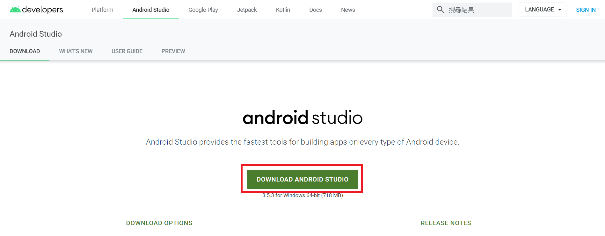
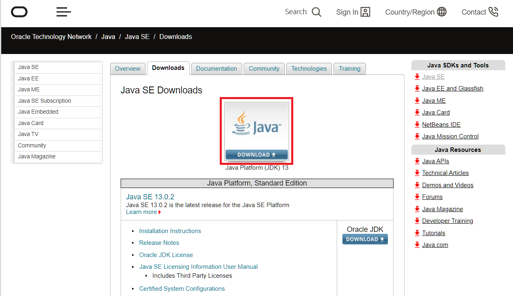

現代人天天使用行動裝置，如果想要製作一般人都能輕鬆使用的應用程式工具，除了撰寫網頁，行動裝置應用程式也是一個很常見的途徑。本系列文將會介紹使用 Android Studio 整合開發環境及 Java 語言開發 Android 應用程式的相關知識。
本篇我會先介紹 Android 的背景知識。
Android 是什麼
Android 是一套以 Linux 為基底的開源作業系統，最初針對手機等行動裝置，現已逐漸擴充到平板、電子書閱讀器及網路電視等領域； Android 的市佔率與 iOS 在伯仲之間。
Android 開發通常是指開發 Android 作業系統上的應用程式（ App ）。
安卓以德，一段歷史
Android 作業系統一開始由 Android, Inc 所開發， 2005 年這家公司被 Google 收購，並與其它相關廠商組成開放式手持裝置聯盟（ Open Handset Alliance ），而成為開源作業系統。
Android 整合 Google 的多項服務，以權利金及廣告點擊作為獲利來源。 2010 年多家手機廠商使用 Android 系統；隔年 Android 推出針對平板的 3.x 版，使 Android 成為最廣泛使用的手機及平版作業系統之一； 2011 年推出 4.0 版整合手機及平板的系統； 5.0 版成為 64 位元的系統。
目前 Android 最新版本為第 10 版。
以前 Android 的版本都以按照字母順序的甜點名稱命名，不過到 Android Q 就直接稱為 Android 10 了呢。
整合開發環境
Google 最初支援 Eclipse 使用 Android 開發工具（ADT）外掛程式，為主要的整合開發環境。
2013 年 Google 推出 Android Studio 整合開發環境，為現在大多數人所使用的 Android 開發工具，內含 Android SDK ，包含 debugger 、函式庫、文件、範例程式碼及模擬器等。
什麼是 SDK ：軟體開發套件 - 維基百科，自由的百科全書
程式語言
Android App 可以使用 Java 或 Kotlin 作為開發語言。 Google 在 2017 年宣布 Kotlin 為開發 Android 優先的程式語言。
這邊我選擇使用 Java ，主要是學業需要。
安裝
了解了基本的背景知識，接下來就來建置開發環境吧！
首先要安裝 Android Studio ；而用 Java 開發程式，還需要安裝 Java 開發工具組（ Jave Develop Kit, JDK ），內含 Java 執行階段環境、Java 編譯器和 Java API；其中 Android Studio 的安裝時間會比較久。
安裝的原則是「有預設就選預設」。
下載連結：
- Android Studio
- 
- JDK
- 
下集預告
下一篇文章會介紹如何開始第一個專案。